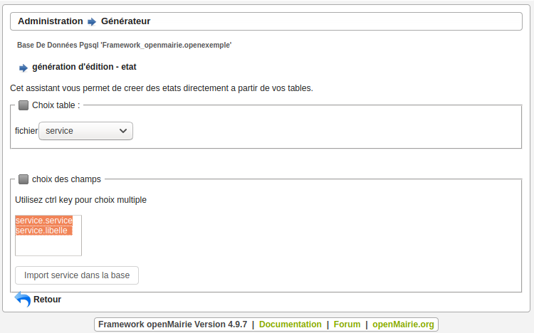

Créer ses états¶
Il vous est proposé de créer un état des courriers par service.
Il sera utilisé dans ce chapitre l’assistant état et sous-état du générateur.
Quittez le projet openCimetiere et revenez à openExemple.
Créer l’état service¶
Nous allons utiliser l’assistant état du générateur dans le menu :
Administration -> Générateur
Dans la partie Assistants, choisir Création d’état puis choisir dans le select l’option service.
Ensuite avec la touche CTRL sélectionner les champs service.service et service.libellé.
Cliquer ensuite sur Import service dans la base.
Un message apparaît : service enregistré.
Vous avez créé un enregistrement qui a pour identifiant service dans la table om_etat, visible dans : Paramétrage -> Editions -> Etat.
Vous devez rendre votre état service actif pour pouvoir y accéder.
Créer le sous-état courrier¶
Nous allons utiliser l’assistant sous-état du générateur dans le menu :
Administration -> Générateur
Dans la partie Assistants, choisir Création sous état puis dans Choix table selectionner courrier.
Surlignez les champs : courrier.dateenvoi, courrier.objetcourrier, courrier.emetteur et courrier.registre.
Choisir courrier.service comme clé secondaire pour faire le lien avec service.
En cliquant sur Import courrier dans la base vous créez un enregistrement ayant pour identifiant courrier.service dans la table om_sousetat. Cette table est visible dans :
Paramètrage -> Sous Etat
Associer le sous-état courrier à l’état service¶
Vous devez rendre d’abord votre sous-état courrier.service actif pour pouvoir l’associer.
Allez dans l’option Sous Etat du menu Paramétrage.
Recherchez le sous-état courrier.service et modifiez le en cochant actif (premier fieldset : collectivité).
Il vous faut maintenant associer le sous-état courrier.service à l’état service.
Allez dans l’option Etat du menu Paramétrage.
Cliquez sur Modifier et rendre l’etat actif (cocher la case). Ensuite, dans le fieldset à déplier Corps, allez dans Insérer -> Sous-états et selectionnez votre sous-état.
Vous devez ensuite faire apparaître dans votre application (pour l’objet voulu) l’icône d’édition des PDF (en rouge sur l’image). Pour cela, dans votre fichier sql/pgsql/service.inc.php inserez le code suivant :
// EDITION
$tab_actions['left']['service'] = array(
'lien' => OM_ROUTE_FORM."&obj=".$obj."&action=102&idx=",
'id' => '',
'target' => "_blank",
'lib' => '<span class="om-icon om-icon-16 om-icon-fix pdf-16" title="'.__('télécharger le récapitulatif au format pdf').'">'.__('récapitulatif').'</span>',
'ordre' => 110,
);
Pour utiliser l’action définie précédemment, il faut surcharger la fonction init_class_action. Pour cela mettre dans obj/service.class.php le code suivant :
function init_class_action(){
parent::init_class_action();
$this->class_actions[102] = array(
"identifier" => "pdf-edition",
"portlet" => array(
"type" => "action-blank",
"libelle" => __("récapitulatif"),
"description" => __('télécharger le récapitulatif au format pdf'),
"class" => "pdf-16",
"order" => 30,
),
//"permission_suffix" => "edition",
"view" => "view_pdf_edition_etat",
"condition" => array()
);
}
Ensuite, il faut génerer la vue associée à l’action créée. Pour cela, dans votre fichier service.class.php, ajouter la fonction suivante :
function view_pdf_edition_etat() {
$this->checkAccessibility();
$pdfedition = $this->compute_pdf_output(
'etat', //etat ou lettretype
'service', //objet de mon etat
$this->f->getCollectivite(),
$this->id
);
$this->expose_pdf_output(
$pdfedition["pdf_output"],
"mon-fichier-".date('YmdHis').".pdf"
);
}
Vous avez désormais un état des courriers par service (Paramétrage -> Service -> Edition PDF) :
Mettre le nom et le prénom de l’emetteur dans le sous-état¶
Nous souhaitons mettre le nom et le prénom de l’emetteur à la place de la clé secondaire.
Vous devez modifier la requête sql du sous-état courrier.service. Aller dans Paramétrage -> Sous Etat et modifier la partie SQL de votre sous-état :
select courrier.dateenvoi as dateenvoi,
courrier.objetcourrier as objetcourrier,
concat(emetteur.nom,' ',emetteur.prenom) as emetteur,
courrier.registre as registre
from &DB_PREFIXEcourrier LEFT JOIN &DB_PREFIXEemetteur on emetteur.emetteur = courrier.emetteur
where courrier.service='&idx'
Votre nouvel état a la forme suivante :
Vous avez de nombreux exemples d’utilisation d’état et de sous-état dans les applications openMairie.
Une utilisation originale a été faite pour le Cerfa du recensement dans openRecensement où à la place du logo il a été mis une image du Cerfa.
On ne peut cependant pas faire tous les états et il est fort possible que vous ayez des états spécifiques. Vous avez des exemples d’utilisation spécifique des méthodes de fpdf dans openElec : carte électorale, liste électorale, …
Vous pouvez compléter votre information avec le chapitre Module “Édition” et regarder les possibilités de paramétrage du générateur pour la réalisation d’un état customisé.